The same 320×200 grid, shared palette and room cameras. New story props in 221B; working pendulum, window weather and mouse routes in the workshop; the stair redressed as the passage behind the clock.
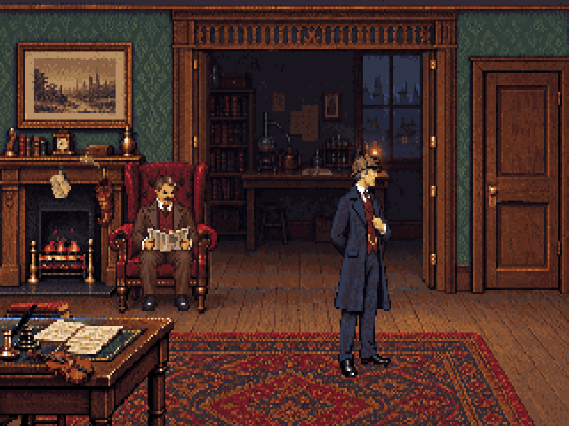
Art review and engineer handoff. Runtime registration and room scripts are unchanged. Watson uses the revised 97px standing reference in the workshop and passage.
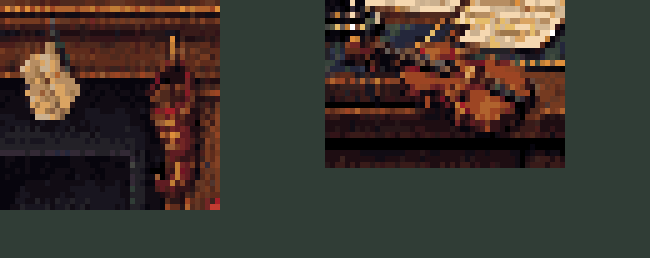
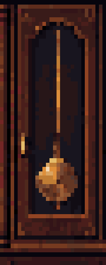
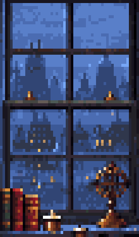
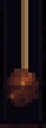
Two starts, one horizontal run beneath the workbench. Right-facing and left-facing cels match the direction of travel; both endpoints are fully hidden. In play, pause 18–35 seconds between runs.
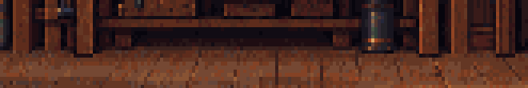
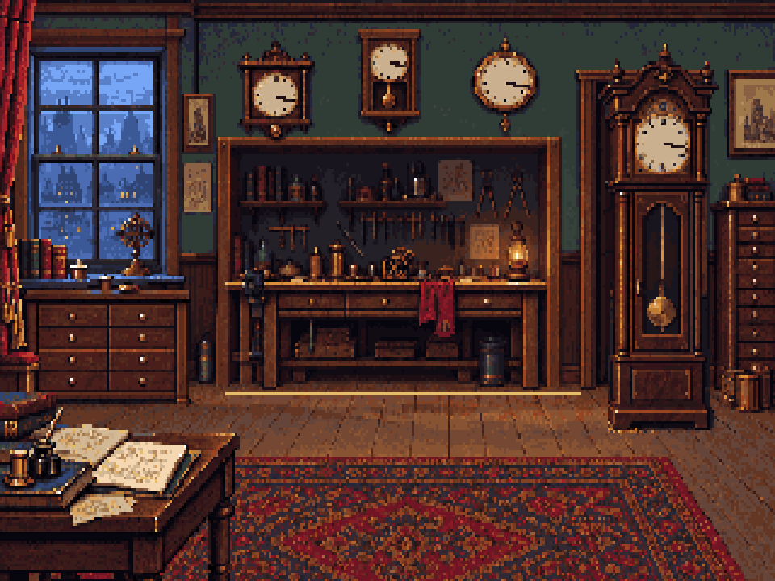
The connected r40 flights, camera and walkable strip are retained. The new Blender source replaces the domestic furnishings with the clock back, mechanism and tools.
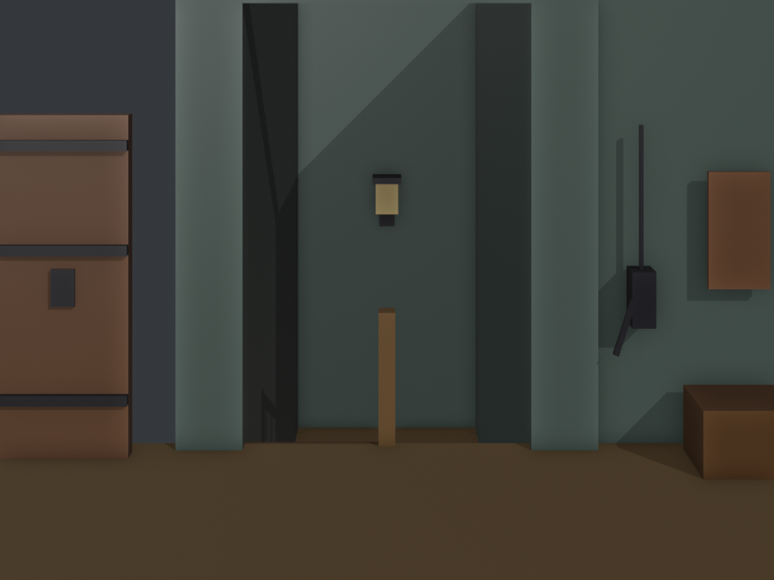
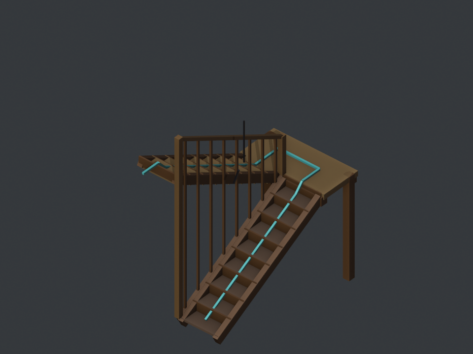
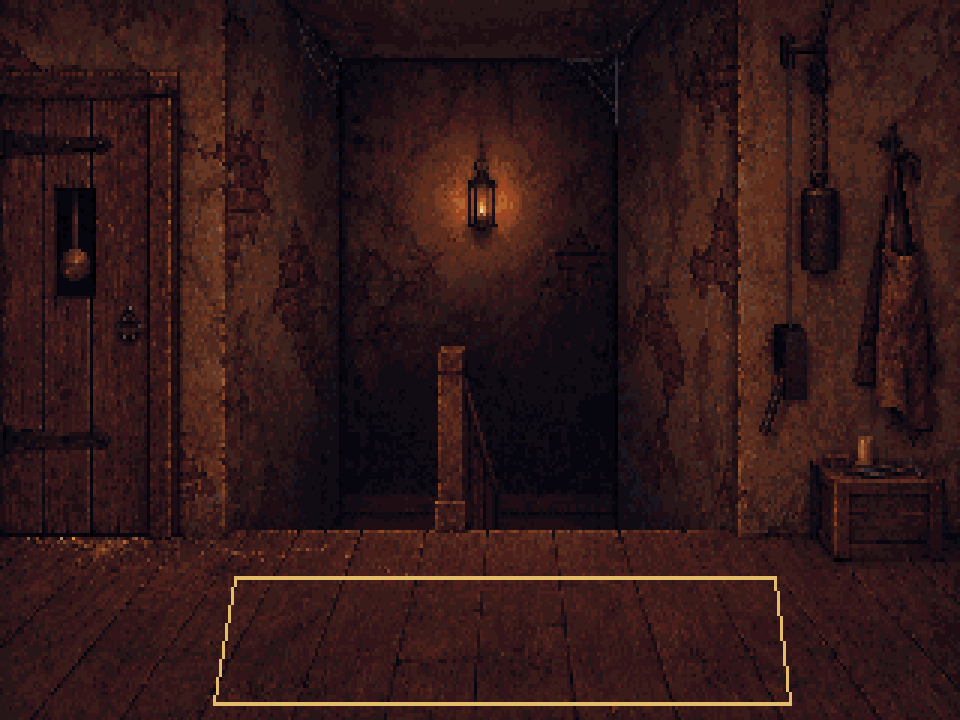
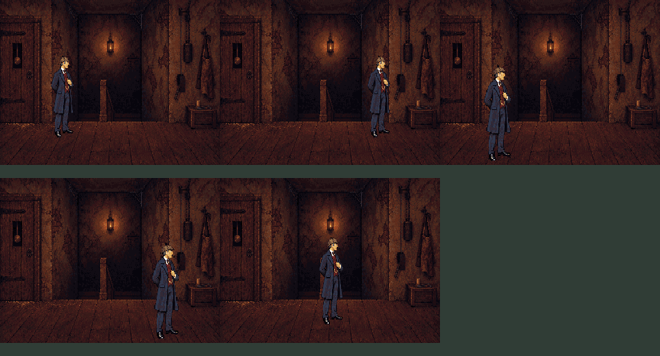
Workflow and integration notes · 221B handoff · Workshop handoff · Passage handoff · Candidate manifest · Pixelorama validation